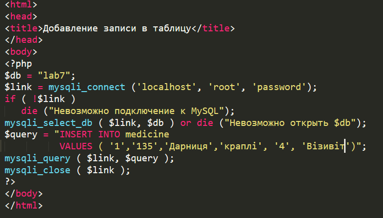
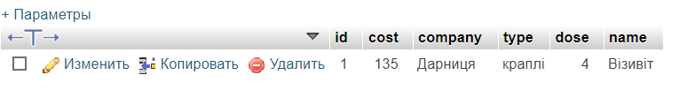
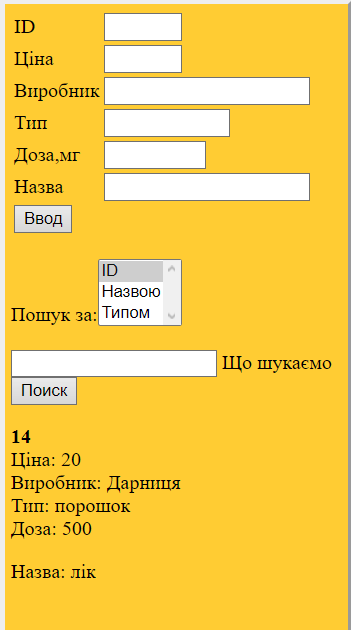

Одже є можливість додавати елементи до БД без html форм, прописуючи ъх в PHP
Під час запуску користувач бачить білий екран, але зміни до БД можна побачити в PHPMyAdmin
Але ми також пропишемо можливість додавати елементи через форму взаємодії
